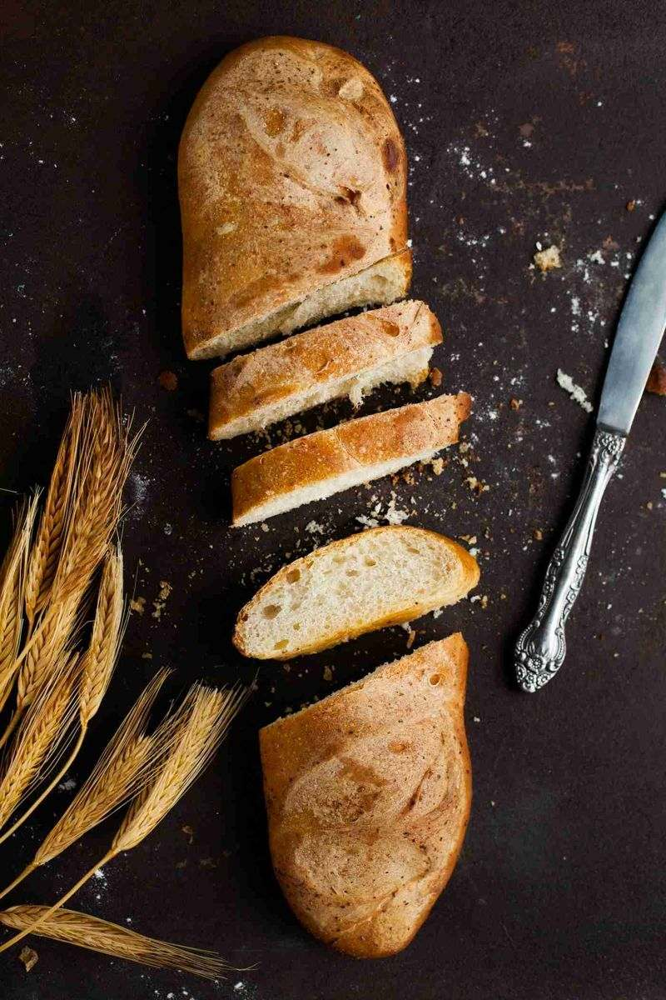
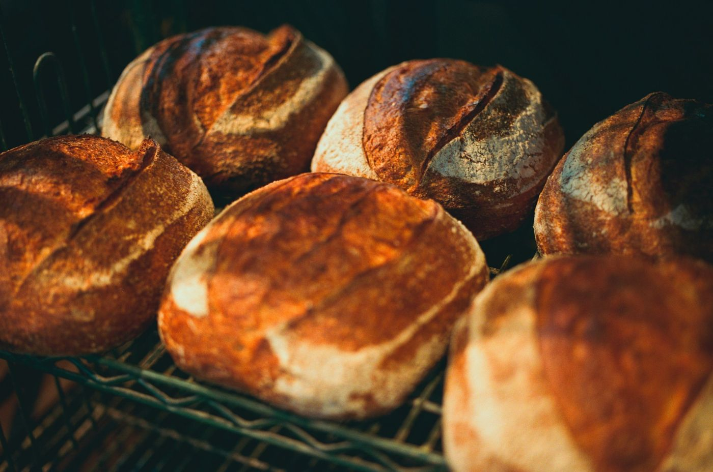
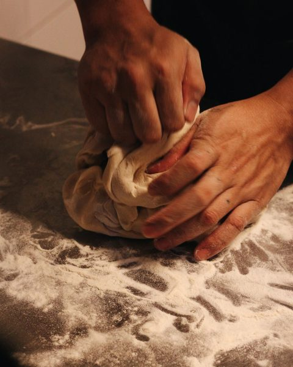

Sourdough, laminated pastry, and espresso near campus. Open at 6:30 a.m.
Mon–Sat 6:30 a.m.–2 p.m., or until sold out
Updated as items sell out. Bread usually runs out by early afternoon.

Order by 8 p.m. for next-day pickup from 6:30 a.m. Pastry dozen $36 with 48 hours' notice.

Old Main Bakehouse opened in 2016 with a single deck oven and a sourdough starter that is still fed every morning. We bake in small batches with flour milled from Utah wheat, and we bake until the day's batch is gone. That is usually early afternoon.

Sample review (fictional)“The best country loaf I've found in the valley. I plan my Saturday around the rye.”
A customer
Sample review (fictional)“A pastry box for our Monday meeting, ready at 7 a.m. and gone by 7:15.”
A customer
100 Main Street
(435) 555-0103
Mon–Sat 6:30 a.m.–2 p.m.
Closed Sundays
Closed Dec 24–Jan 2
Free parking behind the building
Bike rack out front.